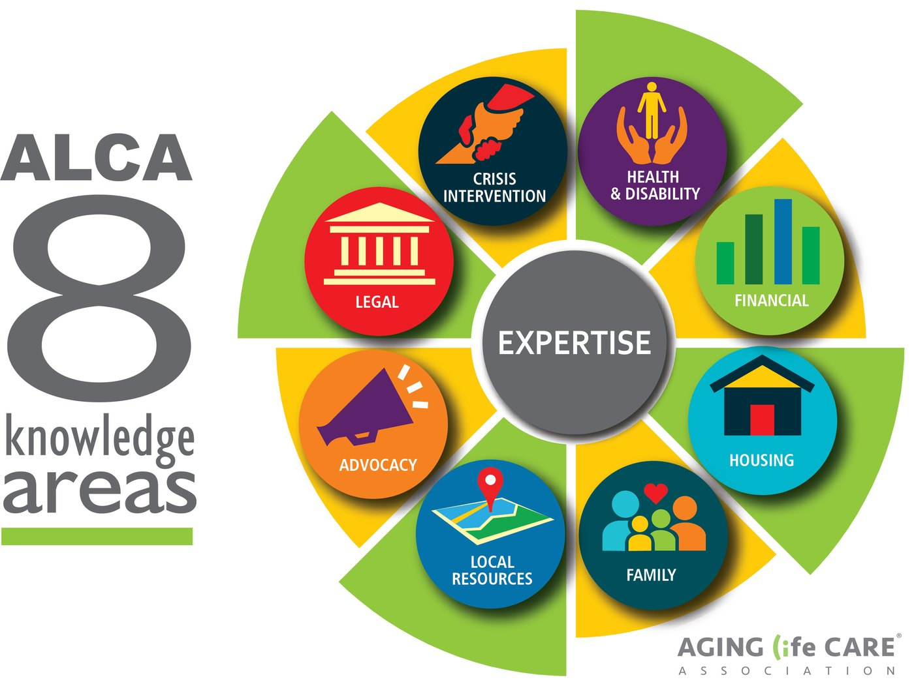

Aging Life Care™, also known as geriatric care management, is a holistic, client-centered approach to caring for older adults or others facing ongoing health challenges. Working with families, the expertise of Aging Life Care Professionals provides the answers at a time of uncertainty.
Our care managers are members of the Aging Life Care Association®, the national professional association for Aging Life Care Professionals. Membership means a shared code of ethics, standards of practice, and ongoing professional development alongside more than 2,000 colleagues nationwide.
Our team is active at the national and regional levels of the association, including service on its national board and leadership of its South Central Chapter.
That network also means we collaborate with care managers across the country. When a family's needs reach beyond North Texas, we can call on trusted colleagues who share our standards.
The national professional association explains what care managers do and how we differ from other forms of senior support.
How we work with familiesA team of researchers from Virginia Tech and the University of Washington conducted a national study of families who worked with Aging Life Care Professionals. Two findings stood out:
would recommend their Aging Life Care Professional
reported greater peace of mind
“Our Aging Life Care Manager was a voice of calm in a crisis.”
“It allows me to sleep at night.”
“My family member was wrapped in a cocoon of services and loved.”
Family voices from the study. Source: Shealy, Teaster, Sands & Gray (2025), Virginia Tech, presented at the 2025 Aging Life Care Association® Annual Conference.
Aging Life Care Professionals bring expertise across the eight knowledge areas defined by the Aging Life Care Association®.

Aging with the Experts, the Aging Life Care Association® podcast, and the association's blog cover the questions families ask us most: signs an aging parent needs help, long-distance caregiving, music and dementia, how to advocate for an older loved one, and planning ahead.
Tell us about your family's situation and we'll talk through whether care management is the right fit. Initial conversations are free.
Get in Touch